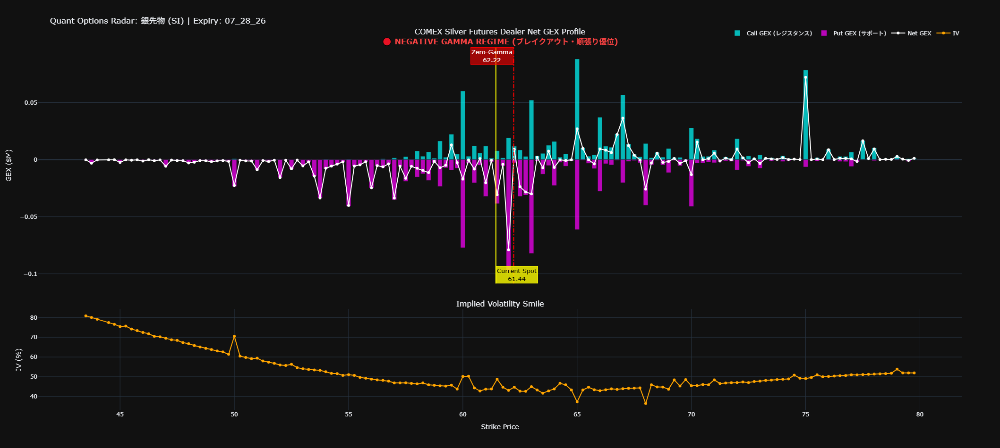

クオンツGEXレーダー 実践トレード・マニュアル
（銀先物・初心者向け）
このダッシュボードは、相場を動かす巨大なクジラである「オプションのマーケットメーカー（MM）」が、どこで現物を買い、どこで現物を売らざるを得ないかを可視化した「カンニングペーパー」です。
CFDトレードにおいて、ローソク足や移動平均線よりも前に、毎朝必ずこのレーダーで「今日の相場の重力場」を確認してください。
1. 画面の見方：3つの重要なサイン
ダッシュボードを開いたら、見るべきポイントはたったの3つです。
① スポット価格（黄色の実線: Spot）
現在の先物価格です。あなたのCFDトレードにおける「現在地」になります。
② GEXの壁（シアン色とマゼンタ色のバー）
これがMMが構築している「見えない壁」です。バーが長ければ長いほど、壁は分厚く、価格を跳ね返す力が強くなります。
- シアン色（Call GEX）：相場の「天井（レジスタンス）」
- 価格がここに向かって上がっていくと、MMはヘッジのために「強制的に売り」を入れてきます。
- 意味: 上昇トレンドがここで止められやすい。
- マゼンタ色（Put GEX）：相場の「床（サポート）」
- 価格がここに向かって下がっていくと、MMはヘッジのために「強制的に買い」を入れてきます。
- 意味: 下落トレンドがここで支えられやすい。
③ ゼロガンマ・フリップ（赤の一点鎖線: Zero-Gamma）
このレーダーで最も重要な線です。
ここは相場の「天気の境界線」であり、現在地（Spot）がこの線の右にいるか左にいるかで、今日のあなたのトレード手法（順張りか、逆張りか）が180度変わります。
💡 Tips: SpotとZero-Gammaが重なって見にくい時は？
現在価格（Spot）がZero-Gammaの数値に極めて近い場合、2つの垂直線や文字が重なって表示されることがあります。
見分け方: スポット価格は「黄色の実線（ラベルは右下）」、ゼロガンマは「赤の一点鎖線（ラベルは左上）」です。ダッシュボードはインタラクティブ（操作可能）に作られているため、パソコンのマウスやスマホの指で線の上にカーソルを合わせる（ホバーする）と、正確な数値がポップアップで個別に表示されます。
相場の意味（超重要）: この2つの線が重なっている時は、見にくいエラーではなく「相場の天気が『晴れ』から『嵐』に変わるかどうかの、まさに瀬戸際（極めて重要な分岐点）」にいることを意味します。どちらに抜け出すか、最も慎重に観察し、チャンスに備えるべきタイミングです。
2. 初心者向け必須用語ガイド
オプションの難しい数式を覚える必要はありません。これだけ知っていればダッシュボードは読めます。
- GEX (Gamma Exposure / ガンマ・エクスポージャー):
相場を裏で操るマーケットメーカー（MM）が、リスク回避のために「どれくらいの量を自動的に売り買いしなければならないか」を示す数値。相場の「見えない壁」の強さです。
- Call GEX (コール・ガンマ):
相場の「上値の重さ（天井）」。グラフではシアン色。ここに価格が近づくと、MMが「売り」を浴びせてくるため、価格が下へ跳ね返されやすくなります。
- Put GEX (プット・ガンマ):
相場の「下値の堅さ（床）」。グラフではマゼンタ色。ここに価格が近づくと、MMが「買い」を入れてくるため、価格が上へ支えられやすくなります。
- Net GEX (ネット・ガンマ):
Call GEXとPut GEXを足し引きした「最終的なMMの圧力」。グラフの白い折れ線です。この線がゼロより上なら相場は安定しやすく、下なら不安定（暴走気味）になります。
- IV (Implied Volatility / インプライド・ボラティリティ):
プロの投資家たちが予想している「これからの値動きの激しさ（荒れ具合）」。下段のオレンジ色の線です。「VIX指数（恐怖指数）」の個別銘柄版と考えてください。
- Zero-Gamma (ゼロガンマ・フリップ):
相場の天気が変わる「境界線」。グラフでは赤色の線です。MMの行動が「逆張り（相場を落ち着かせる）」から「順張り（相場を暴走させる）」に切り替わる、最も危険で重要な価格帯です。
- Current Spot (カレント・スポット):
現在の「取引価格（現在地）」。グラフでは黄色の線です。この現在地がZero-Gammaより右（上）か左（下）かで、今日の戦い方を決めます。
3. 天気（レジーム）判定とトレード戦略
毎朝、Spot（黄色）とZero-Gamma（赤）の位置関係を見て、今日の天気を判定してください。
☀️ 天気：晴れ（ポジティブ・ガンマ）
【条件】Spot（黄色） ＞ Zero-Gamma（赤）
現在価格が赤線より右側（上）にある状態です。
- 相場の特徴: ボラティリティ（値動きの激しさ）が低下し、価格が「シアンの壁」と「マゼンタの壁」の間を行ったり来たりする「ピンボール相場（レンジ相場）」になります。
- あなたの戦略: 【逆張り（押し目買い・戻り売り）】
- アクション①: 価格が下のマゼンタの壁（Put Wall）に近づいたら、「買い（ロング）」を狙います。MMが支えてくれるからです。
- アクション②: 価格が上のシアンの壁（Call Wall）に近づいたら、持っているロングを「利確」するか、新規で「売り（ショート）」を狙います。
- NG行動: ブレイクアウト（壁を突き抜けること）を期待した順張りはダマシに遭いやすいため厳禁です。
⛈️ 天気：嵐（ネガティブ・ガンマ）
【条件】Spot（黄色） ＜ Zero-Gamma（赤）
現在価格が赤線より左側（下）にある状態です。
- 相場の特徴: MMの行動が「下がったらさらに売り、上がったらさらに買う」というパニック状態に陥ります。壁が壁として機能せず、値動きが暴走（急落や踏み上げ）しやすくなります。
- あなたの戦略: 【順張り（トレンドフォロー）】
- アクション: 相場が向かっている方向（特に下落方向）へ、モメンタムに乗って「順張り」します。サポートライン（マゼンタの壁）をあっさり下抜けることが多いので、ブレイクアウト・ショートが有効です。
- NG行動: 「ここまで下がったからそろそろ反発するだろう」という値ごろ感での逆張り買い（ナンピン）は絶対厳禁です。MMと一緒にパニック売りに巻き込まれて焼かれます。
4. 実戦シミュレーション（現在の銀先物のケース）
実際のダッシュボードの画像と数値を例に、具体的なトレードプランを解説します。

- 今日の天気: Spot (62.08) < Zero-Gamma (63.66) なので、判定は 「嵐（ネガティブ・ガンマ）」 です。
- 壁の位置: 下の強力なサポートが
60.00 と 55.00。上のレジスタンスが 62.50 と 65.00。
【具体的なトレードプラン】
- 基本はショート（売り）目線: 現在地は「嵐（ネガティブ・ガンマ）」の領域です。相場は自律反発する力を失っており、下落に勢いがつきやすい状態です。むやみに買うのではなく、反発したところを叩く「戻り売り（ショート）」が基本戦略となります。
- 利確ポイント（ターゲット）: 下落トレンドに乗れた場合、次の大きな目標（ターゲット）は、強烈な Put GEX が待ち構えている
60.00 の壁になります。欲張らずにこの手前（例: 60.20付近）で確実に利確（買い戻し）をします。
- 撤退ライン（損切り）: もし相場が予想に反して上昇し、赤線（63.66）を明確に上抜けた場合、相場の天気が「晴れ」に変わってしまいます。ショートの前提条件が完全に崩れるため、ここが絶対の撤退（損切り）ラインとなります。
5. 運用上の注意点（プロのルーチン）
- 毎朝のデータ更新を怠らない: オプションの建玉（壁の位置）は毎日変化します。古い天気予報で海に出るのは危険です。必ず最新のCSVを配置して更新してください。
- CFD価格との「ベーシス」に注意: Barchartは先物価格、あなたのCFD口座の価格表示はブローカーによって微妙にズレていることがあります。「チャートの形と壁の相対的な位置」をCFDのチャートに当てはめて考えてください。
- 万能ではない: GEXは「相場の重力」を示しますが、戦争や突発的な経済指標（CPIや雇用統計）など、強烈なファンダメンタルズの衝撃は一時的にこの重力を破壊します。指標発表前はポジションを軽くするのが鉄則です。